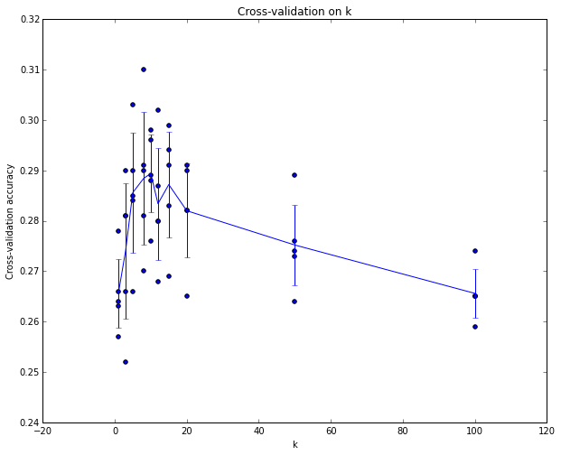
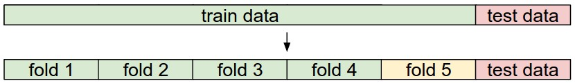
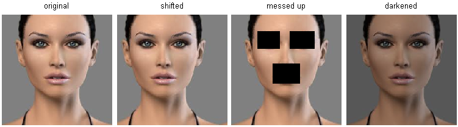

Aula 02 · Classificação de imagens
Classificação de Imagens
⚠️ Este conteúdo é uma tradução para português, gerada automaticamente por IA, a partir do material original em inglês do curso CS231n (Stanford University). Consulte o link "Fonte original" abaixo para o texto original.
Fonte original (inglês): Image Classification · CS231n, Stanford University ↗
Esta é uma aula introdutória, pensada para apresentar pessoas de fora da área de Visão Computacional ao problema de Classificação de Imagens e à abordagem orientada a dados. Sumário:
Motivação. Nesta seção vamos apresentar o problema de Classificação de Imagens, que é a tarefa de atribuir a uma imagem de entrada um rótulo dentre um conjunto fixo de categorias. Este é um dos problemas centrais em Visão Computacional que, apesar de sua simplicidade, tem uma grande variedade de aplicações práticas. Além disso, como veremos mais adiante no curso, muitas outras tarefas de Visão Computacional aparentemente distintas (como detecção de objetos e segmentação) podem ser reduzidas à classificação de imagens.
Exemplo. Por exemplo, na imagem abaixo, um modelo de classificação de imagens recebe uma única imagem e atribui probabilidades a 4 rótulos, {gato, cachorro, chapéu, caneca}. Como mostrado na imagem, tenha em mente que, para um computador, uma imagem é representada como um grande array tridimensional de números. Neste exemplo, a imagem do gato tem 248 pixels de largura, 400 pixels de altura e três canais de cor — vermelho, verde e azul (ou RGB, do inglês). Portanto, a imagem consiste em 248 x 400 x 3 números, ou um total de 297.600 números. Cada número é um inteiro que varia de 0 (preto) a 255 (branco). Nossa tarefa é transformar esse quarto de milhão de números em um único rótulo, como "gato".

Desafios. Como a tarefa de reconhecer um conceito visual (por exemplo, gato) é relativamente trivial para um ser humano, vale a pena considerar os desafios envolvidos do ponto de vista de um algoritmo de Visão Computacional. Ao apresentarmos abaixo uma lista (não exaustiva) de desafios, tenha em mente a representação bruta das imagens como um array 3D de valores de brilho:
- Variação de ponto de vista. Uma única instância de um objeto pode estar orientada de muitas formas em relação à câmera.
- Variação de escala. Classes visuais costumam variar em tamanho (tamanho no mundo real, não apenas em termos de sua extensão na imagem).
- Deformação. Muitos objetos de interesse não são corpos rígidos e podem se deformar de formas extremas.
- Oclusão. Os objetos de interesse podem estar ocluídos. Às vezes apenas uma pequena parte de um objeto (tão pouco quanto alguns pixels) pode estar visível.
- Condições de iluminação. Os efeitos da iluminação são drásticos no nível do pixel.
- Desordem de fundo (background clutter). Os objetos de interesse podem se misturar com o ambiente, tornando-os difíceis de identificar.
- Variação intraclasse. As classes de interesse muitas vezes são relativamente amplas, como cadeira. Há muitos tipos diferentes desses objetos, cada um com sua própria aparência.
Um bom modelo de classificação de imagens precisa ser invariante ao produto cartesiano de todas essas variações, enquanto simultaneamente mantém sensibilidade às variações entre classes.

Abordagem orientada a dados. Como poderíamos escrever um algoritmo capaz de classificar imagens em categorias distintas? Diferente de escrever um algoritmo para, por exemplo, ordenar uma lista de números, não é óbvio como se escreveria um algoritmo para identificar gatos em imagens. Portanto, em vez de tentar especificar diretamente em código a aparência de cada uma das categorias de interesse, a abordagem que vamos seguir não é muito diferente da que se tomaria com uma criança: vamos fornecer ao computador muitos exemplos de cada classe e então desenvolver algoritmos de aprendizado que observam esses exemplos e aprendem sobre a aparência visual de cada classe. Essa abordagem é chamada de abordagem orientada a dados, já que depende, primeiro, de acumular um conjunto de treinamento de imagens rotuladas. Eis um exemplo de como esse conjunto de dados poderia ser:

O pipeline de classificação de imagens. Já vimos que a tarefa em Classificação de Imagens é receber um array de pixels que representa uma única imagem e atribuir-lhe um rótulo. Nosso pipeline completo pode ser formalizado da seguinte forma:
- Entrada: nossa entrada consiste em um conjunto de N imagens, cada uma rotulada com uma dentre K classes diferentes. Chamamos esses dados de conjunto de treinamento.
- Aprendizado: nossa tarefa é usar o conjunto de treinamento para aprender como é a aparência de cada uma das classes. Chamamos essa etapa de treinar um classificador, ou aprender um modelo.
- Avaliação: por fim, avaliamos a qualidade do classificador pedindo que ele preveja rótulos para um novo conjunto de imagens que nunca viu antes. Em seguida, comparamos os rótulos verdadeiros dessas imagens com os previstos pelo classificador. Intuitivamente, esperamos que muitas das previsões coincidam com as respostas verdadeiras (que chamamos de ground truth, ou verdade de referência).
Classificador do Vizinho Mais Próximo
Como nossa primeira abordagem, vamos desenvolver o que chamamos de Classificador do Vizinho Mais Próximo (Nearest Neighbor Classifier). Esse classificador não tem nenhuma relação com Redes Neurais Convolucionais e é muito raramente usado na prática, mas vai nos permitir ter uma ideia da abordagem básica a um problema de classificação de imagens.
Conjunto de dados de exemplo: CIFAR-10. Um conjunto de dados de brinquedo (toy dataset) popular para classificação de imagens é o conjunto de dados CIFAR-10. Esse conjunto consiste em 60.000 imagens pequenas, de 32 pixels de altura e largura. Cada imagem é rotulada com uma dentre 10 classes (por exemplo, "avião, automóvel, pássaro, etc."). Essas 60.000 imagens são divididas em um conjunto de treinamento de 50.000 imagens e um conjunto de teste de 10.000 imagens. Na imagem abaixo você pode ver 10 exemplos aleatórios de cada uma das 10 classes:

Suponha agora que nos é dado o conjunto de treinamento do CIFAR-10 com 50.000 imagens (5.000 imagens para cada um dos rótulos), e desejamos rotular as 10.000 restantes. O classificador do vizinho mais próximo pega uma imagem de teste, compara-a com cada uma das imagens de treinamento e prevê o rótulo da imagem de treinamento mais próxima. Na imagem acima, à direita, você pode ver um exemplo do resultado desse procedimento para 10 imagens de teste. Note que em apenas cerca de 3 dos 10 exemplos uma imagem da mesma classe é recuperada, enquanto nos outros 7 exemplos isso não acontece. Por exemplo, na 8ª linha, a imagem de treinamento mais próxima da cabeça de cavalo é um carro vermelho, presumivelmente por causa do fundo preto forte. Como resultado, essa imagem de um cavalo seria, nesse caso, rotulada incorretamente como um carro.
Você deve ter notado que deixamos sem especificar os detalhes de exatamente como comparamos duas imagens, que nesse caso são apenas dois blocos de 32 x 32 x 3. Uma das possibilidades mais simples é comparar as imagens pixel a pixel e somar todas as diferenças. Em outras palavras, dadas duas imagens e representando-as como vetores \( I_1, I_2 \), uma escolha razoável para compará-las poderia ser a distância L1:
$$ d_1 (I_1, I_2) = \sum_{p} \left| I^p_1 - I^p_2 \right| $$
Onde a soma é feita sobre todos os pixels. Aqui está o procedimento visualizado:

Vamos também ver como poderíamos implementar o classificador em código. Primeiro, vamos carregar os dados do CIFAR-10 na memória como 4 arrays: os dados/rótulos de treinamento e os dados/rótulos de teste. No código abaixo, Xtr (de tamanho 50.000 x 32 x 32 x 3) contém todas as imagens do conjunto de treinamento, e um array unidimensional correspondente Ytr (de comprimento 50.000) contém os rótulos de treinamento (de 0 a 9):
Xtr, Ytr, Xte, Yte = load_CIFAR10('data/cifar10/') # uma função mágica que fornecemos
# achata todas as imagens para serem unidimensionais
Xtr_rows = Xtr.reshape(Xtr.shape[0], 32 * 32 * 3) # Xtr_rows vira 50000 x 3072
Xte_rows = Xte.reshape(Xte.shape[0], 32 * 32 * 3) # Xte_rows vira 10000 x 3072Agora que temos todas as imagens esticadas como linhas, veja como poderíamos treinar e avaliar um classificador:
nn = NearestNeighbor() # cria a classe do classificador Vizinho Mais Próximo
nn.train(Xtr_rows, Ytr) # treina o classificador nas imagens e rótulos de treinamento
Yte_predict = nn.predict(Xte_rows) # prevê os rótulos nas imagens de teste
# e agora imprime a acurácia da classificação, que é o número médio
# de exemplos corretamente previstos (i.e. rótulo bate)
print 'accuracy: %f' % ( np.mean(Yte_predict == Yte) )Note que, como critério de avaliação, é comum usar a acurácia, que mede a fração de previsões que estavam corretas. Note que todos os classificadores que vamos construir satisfazem esta API comum: eles têm uma função train(X,y) que recebe os dados e os rótulos com os quais aprender. Internamente, a classe deve construir algum tipo de modelo dos rótulos e de como eles podem ser previstos a partir dos dados. E então há uma função predict(X), que recebe novos dados e prevê os rótulos. É claro que deixamos de fora a parte principal — o classificador em si. Eis uma implementação de um classificador simples do Vizinho Mais Próximo com a distância L1 que satisfaz esse modelo:
import numpy as np
class NearestNeighbor(object):
def __init__(self):
pass
def train(self, X, y):
""" X é N x D, onde cada linha é um exemplo. Y é 1-dimensional, de tamanho N """
# o classificador do vizinho mais próximo simplesmente memoriza todos os dados de treinamento
self.Xtr = X
self.ytr = y
def predict(self, X):
""" X é N x D, onde cada linha é um exemplo para o qual queremos prever o rótulo """
num_test = X.shape[0]
# garante que o tipo de saída bate com o tipo de entrada
Ypred = np.zeros(num_test, dtype = self.ytr.dtype)
# percorre todas as linhas de teste
for i in range(num_test):
# encontra a imagem de treinamento mais próxima da i-ésima imagem de teste
# usando a distância L1 (soma das diferenças em valor absoluto)
distances = np.sum(np.abs(self.Xtr - X[i,:]), axis = 1)
min_index = np.argmin(distances) # pega o índice com a menor distância
Ypred[i] = self.ytr[min_index] # prevê o rótulo do exemplo mais próximo
return YpredSe você rodasse esse código, veria que esse classificador atinge apenas 38,6% no CIFAR-10. Isso é mais impressionante do que adivinhar aleatoriamente (o que daria 10% de acurácia, já que há 10 classes), mas está longe do desempenho humano (que é estimado em cerca de 94%) ou perto do estado da arte em Redes Neurais Convolucionais, que atingem cerca de 95%, equiparando-se à acurácia humana (veja o ranking de uma competição recente do Kaggle sobre o CIFAR-10).
A escolha da distância. Há muitas outras formas de calcular distâncias entre vetores. Outra escolha comum poderia ser usar a distância L2, que tem a interpretação geométrica de calcular a distância euclidiana entre dois vetores. A distância tem a forma:
$$ d_2 (I_1, I_2) = \sqrt{\sum_{p} \left( I^p_1 - I^p_2 \right)^2} $$
Em outras palavras, estaríamos calculando a diferença pixel a pixel como antes, mas dessa vez elevamos todas ao quadrado, somamos e, por fim, tiramos a raiz quadrada. Em numpy, usando o código acima, precisaríamos substituir apenas uma única linha de código. A linha que calcula as distâncias:
distances = np.sqrt(np.sum(np.square(self.Xtr - X[i,:]), axis = 1))Note que incluí a chamada np.sqrt acima, mas, em uma aplicação prática do vizinho mais próximo, poderíamos deixar de fora a operação de raiz quadrada, porque a raiz quadrada é uma função monótona. Ou seja, ela escala os tamanhos absolutos das distâncias, mas preserva a ordenação, de modo que os vizinhos mais próximos com ou sem ela são idênticos. Se você rodasse o classificador do Vizinho Mais Próximo no CIFAR-10 com essa distância, obteria 35,4% de acurácia (ligeiramente inferior ao resultado com a distância L1).
L1 vs. L2. É interessante considerar as diferenças entre as duas métricas. Em particular, a distância L2 é muito menos tolerante do que a distância L1 quando se trata de diferenças entre dois vetores. Ou seja, a distância L2 prefere muitos desacordos medianos a um único grande. As distâncias L1 e L2 (ou, de forma equivalente, as normas L1/L2 das diferenças entre um par de imagens) são os casos especiais mais comumente usados de uma p-norma.
Classificador k-Vizinhos Mais Próximos
Você deve ter notado que é estranho usar apenas o rótulo da imagem mais próxima quando queremos fazer uma previsão. De fato, é quase sempre o caso que se pode fazer melhor usando o chamado classificador k-Vizinhos Mais Próximos (k-Nearest Neighbor). A ideia é bem simples: em vez de encontrar a única imagem mais próxima no conjunto de treinamento, vamos encontrar as k imagens mais próximas e fazê-las votar no rótulo da imagem de teste. Em particular, quando k = 1, recuperamos o classificador do Vizinho Mais Próximo. Intuitivamente, valores maiores de k têm um efeito de suavização que torna o classificador mais resistente a outliers:

Na prática, você quase sempre vai querer usar o k-Vizinhos Mais Próximos. Mas que valor de k usar? É a esse problema que vamos nos voltar a seguir.
Conjuntos de validação para ajuste de hiperparâmetros
O classificador k-vizinhos mais próximos exige uma configuração para k. Mas qual número funciona melhor? Além disso, vimos que há muitas funções de distância diferentes que poderíamos ter usado: norma L1, norma L2, e há muitas outras escolhas que nem sequer consideramos (por exemplo, produtos internos). Essas escolhas são chamadas de hiperparâmetros e aparecem com bastante frequência no projeto de muitos algoritmos de Aprendizado de Máquina que aprendem a partir de dados. Muitas vezes não é óbvio quais valores/configurações se deve escolher.
Você pode ficar tentado a sugerir que devemos testar muitos valores diferentes e ver o que funciona melhor. Essa é uma boa ideia, e é de fato o que faremos, mas isso precisa ser feito com muito cuidado. Em particular, não podemos usar o conjunto de teste para fins de ajustar hiperparâmetros. Sempre que você estiver projetando algoritmos de Aprendizado de Máquina, deve pensar no conjunto de teste como um recurso muito precioso, que idealmente nunca deve ser tocado até uma única vez, no final. Caso contrário, o perigo muito real é que você pode ajustar seus hiperparâmetros para funcionar bem no conjunto de teste mas, se fosse implantar seu modelo, poderia ver um desempenho significativamente reduzido. Na prática, diríamos que você sobreajustou (overfit) ao conjunto de teste. Outra forma de ver isso é que, se você ajusta seus hiperparâmetros no conjunto de teste, está efetivamente usando o conjunto de teste como conjunto de treinamento e, portanto, o desempenho que você obtém nele será otimista demais em relação ao que você realmente observaria ao implantar seu modelo. Mas se você usar o conjunto de teste apenas uma vez, no final, ele continua sendo um bom proxy para medir a generalização do seu classificador (veremos muito mais discussão sobre generalização mais adiante no curso).
Avalie no conjunto de teste apenas uma única vez, bem no final.
Felizmente, existe uma forma correta de ajustar os hiperparâmetros e que não toca no conjunto de teste. A ideia é dividir nosso conjunto de treinamento em dois: um conjunto de treinamento um pouco menor e o que chamamos de conjunto de validação. Usando o CIFAR-10 como exemplo, poderíamos, por exemplo, usar 49.000 das imagens de treinamento para treinar e deixar 1.000 de lado para validação. Esse conjunto de validação é essencialmente usado como um falso conjunto de teste para ajustar os hiperparâmetros.
Veja como isso poderia ser no caso do CIFAR-10:
# suponha que já temos Xtr_rows, Ytr, Xte_rows, Yte como antes
# lembre que Xtr_rows é uma matriz 50.000 x 3072
Xval_rows = Xtr_rows[:1000, :] # pega as primeiras 1000 para validação
Yval = Ytr[:1000]
Xtr_rows = Xtr_rows[1000:, :] # mantém as últimas 49.000 para treino
Ytr = Ytr[1000:]
# encontra os hiperparâmetros que funcionam melhor no conjunto de validação
validation_accuracies = []
for k in [1, 3, 5, 10, 20, 50, 100]:
# usa um valor particular de k e avalia nos dados de validação
nn = NearestNeighbor()
nn.train(Xtr_rows, Ytr)
# aqui assumimos uma classe NearestNeighbor modificada que aceita k como entrada
Yval_predict = nn.predict(Xval_rows, k = k)
acc = np.mean(Yval_predict == Yval)
print 'accuracy: %f' % (acc,)
# guarda o que funciona no conjunto de validação
validation_accuracies.append((k, acc))Ao final desse procedimento, poderíamos plotar um gráfico que mostra quais valores de k funcionam melhor. Então ficaríamos com esse valor e avaliaríamos uma única vez no conjunto de teste de fato.
Divida seu conjunto de treinamento em conjunto de treinamento e um conjunto de validação. Use o conjunto de validação para ajustar todos os hiperparâmetros. No final, rode uma única vez no conjunto de teste e relate o desempenho.
Validação cruzada. Nos casos em que o tamanho dos seus dados de treinamento (e, portanto, também dos dados de validação) pode ser pequeno, às vezes as pessoas usam uma técnica mais sofisticada para ajuste de hiperparâmetros, chamada validação cruzada. Retomando nosso exemplo anterior, a ideia é que, em vez de escolher arbitrariamente os primeiros 1000 pontos de dados como conjunto de validação e o resto como treinamento, você pode obter uma estimativa melhor e menos ruidosa de quão bem certo valor de k funciona iterando sobre diferentes conjuntos de validação e tirando a média do desempenho entre eles. Por exemplo, em validação cruzada de 5 partições (5-fold), dividiríamos os dados de treinamento em 5 partições iguais, usaríamos 4 delas para treinamento e 1 para validação. Em seguida, iteraríamos sobre qual partição é a de validação, avaliaríamos o desempenho e, por fim, tiraríamos a média do desempenho entre as diferentes partições.

Na prática. Na prática, as pessoas preferem evitar a validação cruzada em favor de ter uma única divisão de validação, já que a validação cruzada pode ser computacionalmente cara. As divisões que costumam ser usadas ficam entre 50%-90% dos dados de treinamento para treino, e o resto para validação. No entanto, isso depende de múltiplos fatores: por exemplo, se o número de hiperparâmetros é grande, você pode preferir usar divisões de validação maiores. Se o número de exemplos no conjunto de validação é pequeno (talvez apenas algumas centenas), é mais seguro usar validação cruzada. Números típicos de partições que se veem na prática seriam validação cruzada de 3, 5 ou 10 partições.

Vantagens e desvantagens do classificador do Vizinho Mais Próximo.
Vale a pena considerar algumas vantagens e desvantagens do classificador do Vizinho Mais Próximo. Claramente, uma vantagem é que ele é muito simples de implementar e entender. Além disso, o classificador não leva tempo algum para treinar, já que tudo o que é necessário é armazenar e, possivelmente, indexar os dados de treinamento. No entanto, pagamos esse custo computacional no momento do teste, já que classificar um exemplo de teste exige uma comparação com cada um dos exemplos de treinamento. Isso é ao contrário do desejável, já que, na prática, muitas vezes nos importamos muito mais com a eficiência no momento do teste do que com a eficiência no momento do treinamento. Na verdade, as redes neurais profundas que vamos desenvolver mais adiante neste curso deslocam esse compromisso para o outro extremo: são muito caras de treinar, mas, uma vez concluído o treinamento, é muito barato classificar um novo exemplo de teste. Esse modo de operação é muito mais desejável na prática.
Como observação à parte, a complexidade computacional do classificador do Vizinho Mais Próximo é uma área ativa de pesquisa, e existem vários algoritmos e bibliotecas de Vizinho Mais Próximo Aproximado (ANN) que podem acelerar a busca do vizinho mais próximo em um conjunto de dados (por exemplo, FLANN). Esses algoritmos permitem trocar a exatidão da recuperação do vizinho mais próximo por sua complexidade de espaço/tempo durante a recuperação, e costumam depender de uma etapa de pré-processamento/indexação que envolve construir uma kdtree, ou rodar o algoritmo k-means.
O Classificador do Vizinho Mais Próximo às vezes pode ser uma boa escolha em alguns cenários (especialmente se os dados forem de baixa dimensionalidade), mas raramente é apropriado para uso em cenários práticos de classificação de imagens. Um problema é que imagens são objetos de alta dimensionalidade (i.e. costumam conter muitos pixels), e distâncias em espaços de alta dimensionalidade podem ser muito contraintuitivas. A imagem abaixo ilustra o ponto de que as similaridades L2 baseadas em pixels que desenvolvemos acima são muito diferentes das similaridades perceptuais:

Aqui está mais uma visualização para convencê-lo de que usar diferenças de pixels para comparar imagens é inadequado. Podemos usar uma técnica de visualização chamada t-SNE para pegar as imagens do CIFAR-10 e projetá-las em duas dimensões, de forma que suas distâncias par a par (locais) sejam melhor preservadas. Nessa visualização, imagens mostradas próximas são consideradas muito próximas de acordo com a distância L2 de pixels que desenvolvemos acima:
Em particular, note que as imagens próximas umas das outras são muito mais uma função da distribuição geral de cores das imagens, ou do tipo de fundo, do que de sua identidade semântica. Por exemplo, um cachorro pode ser visto bem perto de um sapo, já que ambos por acaso estão sobre um fundo branco. Idealmente, gostaríamos que imagens de todas as 10 classes formassem seus próprios agrupamentos, de forma que imagens da mesma classe fiquem próximas umas das outras, independentemente de características e variações irrelevantes (como o fundo). No entanto, para obter essa propriedade, teremos que ir além dos pixels brutos.
Resumo
Em resumo:
- Apresentamos o problema de Classificação de Imagens, no qual nos é dado um conjunto de imagens, todas rotuladas com uma única categoria. Em seguida, somos solicitados a prever essas categorias para um novo conjunto de imagens de teste e medir a acurácia das previsões.
- Apresentamos um classificador simples chamado classificador do Vizinho Mais Próximo. Vimos que há múltiplos hiperparâmetros (como o valor de k, ou o tipo de distância usada para comparar exemplos) associados a esse classificador e que não havia uma forma óbvia de escolhê-los.
- Vimos que a forma correta de definir esses hiperparâmetros é dividir seus dados de treinamento em dois: um conjunto de treinamento e um falso conjunto de teste, que chamamos de conjunto de validação. Testamos diferentes valores de hiperparâmetros e mantemos os valores que levam ao melhor desempenho no conjunto de validação.
- Se a falta de dados de treinamento é uma preocupação, discutimos um procedimento chamado validação cruzada, que pode ajudar a reduzir o ruído na estimativa de quais hiperparâmetros funcionam melhor.
- Uma vez encontrados os melhores hiperparâmetros, nós os fixamos e realizamos uma única avaliação no conjunto de teste de fato.
- Vimos que o Vizinho Mais Próximo pode nos dar cerca de 40% de acurácia no CIFAR-10. É simples de implementar, mas exige que armazenemos todo o conjunto de treinamento, e é caro de avaliar em uma imagem de teste.
- Por fim, vimos que o uso de distâncias L1 ou L2 sobre valores brutos de pixels não é adequado, já que as distâncias se correlacionam mais fortemente com fundos e distribuições de cor das imagens do que com seu conteúdo semântico.
Nas próximas aulas, vamos embarcar no enfrentamento desses desafios e, eventualmente, chegar a soluções que dão 90% de acurácia, nos permitem descartar completamente o conjunto de treinamento uma vez concluído o aprendizado, e nos permitirão avaliar uma imagem de teste em menos de um milissegundo.
Resumo: aplicando o kNN na prática
Se você deseja aplicar o kNN na prática (esperançosamente não em imagens, ou talvez apenas como uma referência de base), proceda da seguinte forma:
- Pré-processe seus dados: normalize as características dos seus dados (por exemplo, um pixel em imagens) para terem média zero e variância unitária. Cobriremos isso em mais detalhes em seções posteriores, e optamos por não cobrir a normalização de dados nesta seção porque os pixels em imagens costumam ser homogêneos e não apresentam distribuições muito diferentes, o que reduz a necessidade de normalização de dados.
- Se os seus dados forem de dimensionalidade muito alta, considere usar uma técnica de redução de dimensionalidade, como PCA (wiki, notas do CS229, blog), NCA (wiki, blog), ou até mesmo Projeções Aleatórias.
- Divida seus dados de treinamento aleatoriamente em divisões de treino/validação. Como regra geral, entre 70-90% dos seus dados costumam ir para a divisão de treino. Essa configuração depende de quantos hiperparâmetros você tem e de quanta influência você espera que eles tenham. Se houver muitos hiperparâmetros a estimar, você deve preferir ter conjuntos de validação maiores para estimá-los de forma eficaz. Se você estiver preocupado com o tamanho dos seus dados de validação, o melhor é dividir os dados de treinamento em partições e realizar validação cruzada. Se você puder arcar com o orçamento computacional, é sempre mais seguro optar pela validação cruzada (quanto mais partições, melhor, mas mais cara).
- Treine e avalie o classificador kNN nos dados de validação (para todas as partições, se estiver fazendo validação cruzada) para muitas escolhas de k (por exemplo, quanto mais, melhor) e entre diferentes tipos de distância (L1 e L2 são boas candidatas).
- Se o seu classificador kNN estiver demorando demais para rodar, considere usar uma biblioteca de Vizinho Mais Próximo Aproximado (por exemplo, FLANN) para acelerar a recuperação (ao custo de alguma acurácia).
- Anote os hiperparâmetros que deram os melhores resultados. Há a questão de se você deveria usar o conjunto de treinamento completo com os melhores hiperparâmetros, já que os hiperparâmetros ótimos poderiam mudar se você incorporasse os dados de validação ao seu treinamento (já que o tamanho dos dados seria maior). Na prática, é mais limpo não usar os dados de validação no classificador final e considerá-los consumidos na estimativa dos hiperparâmetros. Avalie o melhor modelo no conjunto de teste. Relate a acurácia no conjunto de teste e declare o resultado como o desempenho do classificador kNN nos seus dados.
Leitura complementar
Aqui estão alguns links (opcionais) que você pode achar interessantes para leitura complementar:
- A Few Useful Things to Know about Machine Learning, onde a seção 6, em especial, é relevante, mas o artigo inteiro é uma leitura calorosamente recomendada.
- Recognizing and Learning Object Categories, um curso curto sobre categorização de objetos, do ICCV 2005.